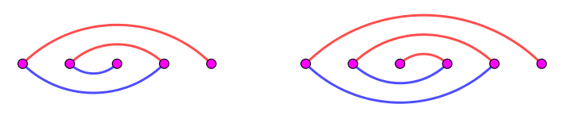
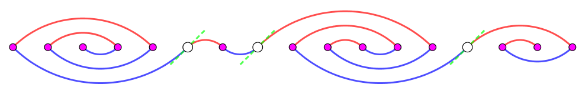
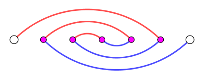
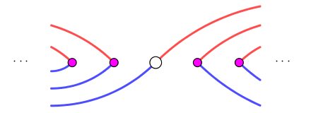
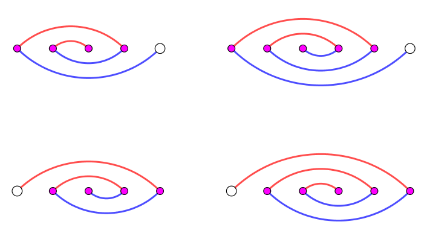

称一个元素为正整数的数组对 $\left( A, B \right)$ 是好的，如果 $A = \left[ a_1, a_2, \cdots, a_{\left| A \right|} \right], B = \left[ b_1, b_2, \cdots, b_{\left| B \right|} \right]$ 满足如下三个性质：
$A$ 中所有元素之和等于 $N$。
$B$ 中所有元素之和等于 $N$。
对于任何一个长度为 $N$ 的串 $s$，如果它满足 1., 2.，则它只包含一个字符 (即存在字符 $c$ 使得 $s = c^N$)：
$s \left[ 1 .. a_1 \right], s \left[ a_1 + 1 .. a_1 + a_2 \right], \cdots, s \left[ \left( a_1 + a_2 + \cdots + a_{\left| A \right| - 1} + 1 \right) .. \left( a_1 + a_2 + \cdots + a_{\left| A \right| - 1} + a_{\left| A \right|} \right) \right]$ 均为回文串。
$s \left[ 1 .. b_1 \right], s \left[ b_1 + 1 .. b_1 + b_2 \right], \cdots, s \left[ \left( b_1 + b_2 + \cdots + b_{\left| b \right| - 1} + 1 \right) .. \left( b_1 + b_2 + \cdots + b_{\left| b \right| - 1} + b_{\left| b \right|} \right) \right]$ 均为回文串。
问给定一个可重集 $S$，求是否存在一个好的数组对 $\left( A, B \right)$，满足 $A$ 中元素是 $S$ 一个排列？如果存在，并给出一组构造。
第一行包含两个正整数 $N, M$ ($N \leq 10^5; M \leq 100$)，表示字符串的长度和可重集 $S$ 的大小 (同时也是数组 $A$ 的大小)。
第二行包含 $M$ 个正整数 $s_1, s_2, \cdots, s_M$ ($\displaystyle \sum_{i=1}^M s_i = N$)，表示集合 $S$ 中的元素。
如果存在这样的好的数组对，则输出三行，第一行按照顺序输出数组 $A$，第二行输出数组 $B$ 的长度，第三行按顺序输出数组 $B$。
否则，输出一行 Impossible。
注意到「一个串是回文的」这个条件可以转化为若干对字符相等的条件。
而字符相等显然是一个等价关系，因此可以尝试建立并查集图论模型 —— 即如果 $s_i = s_j$，则加入一条连接 $u, v$ 的边，得到图 $G = \left( V, E \right)$。
而数组 $A, B$ 合法的条件就是：将 $A, B$ 所对应的边都连完后，图 $G$ 连通。
由连通图的性质可知，$\left| E \right| \geq \left| V - 1 \right| = N - 1$。
考虑一个数组所能带来的边数。
注意到每个点的度数不超过 $1$，因此只考虑一个数组，所得到的图可以看成是一个 "匹配"。
我们去计算孤立点的个数，可以发现，对于每个为奇数的 $a_i$，它恰好产生一个孤立点。
于是孤立点总数就等于数组 $A$ 中奇数的个数，记作 $O_A$，从而边数就等于 $\dfrac {N - O_A} 2$。
同理，$B$ 数组所产生的边的数量为 $\dfrac {N - O_B} 2$。
综上，得到不等式 $\dfrac {N - O_A} 2 + \dfrac {N - O_B} 2 \geq N - 1 \Leftrightarrow O_A + O_B \leq 2$。
所以，当 $O_A > 2$ 时，原问题无解。
反之一定有解吗？我们来尝试着构造一下。
首先，特别讨论一下 $M = 1$ 的情形。
若 $A = \left[ 1 \right]$，$G$ 为平凡图 (孤立点)，自然是连通的，取 $B = \left[ 1 \right]$ 即可。
若 $A = \left[ n \right]$ ($n > 1$)，则可以取 $B = \left[ n - 1, 1 \right]$，通过下图容易证明。
对于 $M > 1$，的情形，设 $A = \left[ l, 2 c_1, \cdots, 2 c_k, r \right]$ (其中 $l, r$ 可以是奇数也可以使偶数)，我们取 $B = \left[ l + 1, 2 c_1, \cdots, 2 c_k, r - 1 \right]$ (如果 $r - 1 = 0$，则忽略这一项)。
为证明 $G$ 连通，我们将 $V$ 分成若干个部分：$V = \left\{ v_1, v_2, \cdots, v_l \right\} \cup \left\{ v_{l+1} \right\} \cup \left\{ v_{l+2}, v_{l+3}, \cdots, v_{l+2c_1} \right\} \cup \left\{ v_{l + 2 c_1 + 1} \right\} \cup \cdots \cup \left\{ v_{n-r+1} \right\} \cup \left\{ v_{n-r+2}, v_{n-r+3}, \cdots, v_n \right\}$，如下图所示：
考虑中间的每一段，它都形如这样：
对于每个单元素集，它都有着类似枢纽的作用，连结两边的段：
而对于两侧的情形，则类似我们刚才讨论的 $M = 1$ 的情况：
结合这三方面，不难说明 $G$ 是连通的。
于是，对于 $M > 1$ 的情形，我们只需要判断奇数是否不超过 $2$ 个，如果是，就将所有的奇数放到两侧，并将头 $+1$，尾 $-1$，即可完成构造。
时间复杂度 $O \left( M \right)$。
#include <bits/stdc++.h>
const int N = 108;
int n;
int a[N], b[N];
int main() {
int i, mid;
scanf("%*d%d", &n);
for (i = 0; i < n; ++i) scanf("%d", a + i);
if (n == 1) return *a == 1 ? puts("1\n1\n1") : printf("%d\n2\n1 %d\n", *a, *a - 1), 0;
mid = std::partition(a, a + n, [] (const int x) -> bool {return x % 2;}) - a;
if (mid > 2) return puts("Impossible"), 0;
a[n] = *a;
for (i = 1; i <= n; ++i) printf("%d%c", a[i], i == n ? 10 : 32);
memcpy(b + 1, a + 1, n << 2), ++b[1], --b[n], n -= !b[n];
printf("%d\n", n);
for (i = 1; i <= n; ++i) printf("%d%c", b[i], i == n ? 10 : 32);
return 0;
}
坑1：不要忘记各种特判！比如 $M = 1$，$M = 1 \wedge s_1 = 1$，以及在 $+1 / -1$ 过程中对 $0$ 的处理。
坑2：寻找奇数的过程可以使用 partition 来完成。